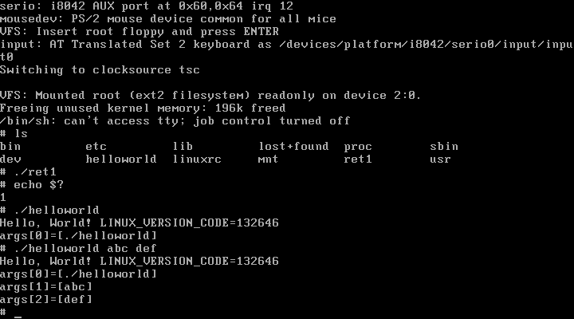
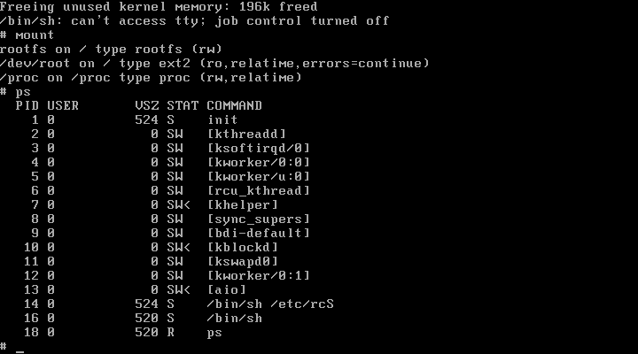
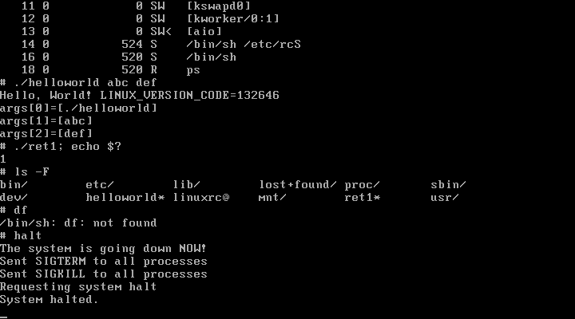

カテゴリ: Linux
技術/Linux/手作りLinuxシステム/01. Boot from Floppy Disk (kernel-2.6.x) で使用したBusyBoxですが、Linuxカーネルのヘッダーファイルをincludeしています。2011年4月現在、BusyBoxのFAQ( http://www.busybox.net/FAQ.html )にも
Programming questions > 8. Tips and tricks > Including kernel headers
という項目で「本当は避けたほうが良いんだけど、どうしてもincludeしなくちゃならない場面もある」云々と書かれています。
特に設定を行っていない場合、ホストマシンのインクルードパスが使われるので、ホストマシンにインストールされた"kernel-headers"パッケージ提供のヘッダーファイルが参照されます。
どうせなら、ターゲットのLinuxカーネルヘッダを参照したいですよね。
となるとlibcライブラリもターゲットのLinuxに合わせたいところです。しかしglibcはMB単位の大きさになってしまうのでフロッピーに収まりません。
そこで今回取り上げるのが uClibc という組み込み向けにコンパクト化されたCライブラリです。
- uClibc
つまり
ターゲットのLinuxヘッダー + uClibc + BusyBox
の組み合わせにすればBusyBoxが参照するヘッダーも、リンクするライブラリも、全てターゲットとするLinuxに合わせることが出来ます。
この手法は組み込みの世界でも使われているらしく、@ITのMONOistで連載記事が公開されています。大いに参考にさせてもらいました、ありがとうございます。
- 連載記事「いますぐ使える！ BusyBox活用術」 － ＠IT MONOist
ということで、今回は kernel-2.6.x のFDブートの発展形というか改良型としてルートファイルシステム上のアプリケーションを BusyBox + uClibc で構築してみます。加えて、簡単なHelloWorldもuClibcをリンクするようコンパイル、動作確認してみましょう。
Linuxカーネルのヘッダーファイルのインストール (make headers_install)
最初に行うのがLinuxカーネルで
make headers_install
です。
技術/Linux/手作りLinuxシステム/01. Boot from Floppy Disk (kernel-2.6.x) の時点でのディレクトリ構成を復習します。
/home/msakamoto/reduced.linux/ linux-2.6.38.2/ ... オリジナルのソースディレクトリ 01_boot_from_fd_2.6/ ... ビルド用の出力ディレクトリ
この構成ですと、単純に以下のオプションを指定すれば今回使うLinuxヘッダーを参照してくれそうです。
-nostdinc -I/home/msakamoto/reduced.linux/01_boot_from_fd_2.6/include -I/home/msakamoto/reduced.linux/linux-2.6.38.2/include -I/home/msakamoto/reduced.linux/linux-2.6.38.2/arch/x86/include
ところが、実際にこれを指定してコンパイルしてみると次の警告が発生します。
.../linux-2.6.38.2/include/linux/types.h:13:2: warning: \ #warning "Attempt to use kernel headers from user space, \ see http://kernelnewbies.org/KernelHeaders"
"see"で示されたURLを見てみると、Linuxカーネルのヘッダーファイルを正しく参照するには
make headers_install
してインストールした先を参照すれば良いことが分かります。
一応 "make help" で説明を見てみます：
$ cd /home/msakamoto/reduced.linux/01_boot_from_fd_2.6
$ make help
...
headers_install - Install sanitised kernel headers to INSTALL_HDR_PATH
(default: /home/msakamoto/reduced.linux/01_boot_from_fd_2.6/usr)
...
デフォルトのインストール先を確認できました。ビルドディレクトリからの相対パスになっているので、そのままmakeしてみます。
$ make headers_install
make -C /home/msakamoto/reduced.linux/linux-2.6.38.2 \
O=/home/msakamoto/reduced.linux/01_boot_from_fd_2.6/. \
headers_install
CHK include/linux/version.h
HOSTCC scripts/unifdef
INSTALL include/asm-generic (34 files)
...
$ cd usr/include/
$ pwd
/home/msakamoto/reduced.linux/01_boot_from_fd_2.6/usr/include
$ ls
asm/ asm-generic/ drm/ linux/ mtd/ rdma/ scsi/ sound/ video/ xen/
ホストマシンの "/usr/include/" 以下と同様なレイアウトでカーネルヘッダーが配置されました。ここのパスをuClibc, BusyBoxをビルドするときのインクルードパスに指定します。
uClibcの入手とビルド
前掲のuClibcの公式HPからダウンロードします。今回は uClibc-0.9.31.tar.bz2 を使いました。
$ pwd /home/msakamoto/reduced.linux $ ls ... uClibc-0.9.31.tar.bz2 ... $ tar jxf uClibc-0.9.31.tar.bz2 $ cd uClibc-0.9.31
準備
技術/Linux/uClibc/03, x86(32bit) PC環境でuClibcを試す を参考に "libc/misc/time/time.c", "extra/scripts/install_headers.sh" を修正します。
今回は "03_bb_and_uclibc" というディレクトリを新たに作り、そのなかで実験してみます。
$ mkdir /home/msakamoto/reduced.linux/03_bb_and_uclibc
技術/Linux/uClibc/03, x86(32bit) PC環境でuClibcを試す で紹介したMakefile, ret1.c, helloworld.c, specs を流用します。"uclibc_test/" を作って実験した環境があれば、コピーします。
$ pushd ./uclibc_test $ cp Makefile ret1.c helloworld.c specs ../03_bb_and_uclibc/ $ popd
uClibcの実行環境のインストール先は、前々回作成したルートファイルシステムを流用します。uClibcのビルド後もhelloworld, ret1のビルドで使いますので、別端末でログインし、マウントしたままにしておきます。
$ pwd /home/msakamoto/reduced.linux/03_bb_and_uclibc $ cp ../01_boot_from_fd_2.6/root_fs.img ./ $ su # mount root_fs.img /mnt/loop0 -t ext2 -o loop
Makefile中のディレクトリパス, RUNTIME_INTERP, PREFIXを修正します。またret1, helloworld静的リンクは行わないので該当ターゲットを削除します。さらに crtX.o の指定などは specs ファイルで行いますので、関連するリンカオプションを修正します。細かい所も修正していますので、修正漏れが無いよう注意してください。
Makefile:
# オリジナルのソースツリー
UCLIBC_SRC_DIR=/home/msakamoto/reduced.linux/uClibc-0.9.31
# 実験環境のルートディレクトリ
TEST_DIR=/home/msakamoto/reduced.linux/03_bb_and_uclibc
# ターゲットとなるLinuxのヘッダーファイルのディレクトリ
LINUX_KERNEL_HEADER=/home/msakamoto/reduced.linux/01_boot_from_fd_2.6/usr/include
# "make O=..." で指定するビルドディレクトリ
UCLIBC_BUILD_DIR=$(TEST_DIR)/build_uclibc
# 開発用のヘッダーとライブラリのインストール先
UCLIBC_DEV_DIR=$(TEST_DIR)/dev
# 実行時に使うライブラリとローダ(ld-uClibc)のインストール先
UCLIBC_RUNTIME_DIR=/mnt/loop0
# アプリケーションをリンクするときに指定するローダのフルパス
UCLIBC_RUNTIME_INTERP=/lib/ld-uClibc.so.0
# 注意！ "実行時の" フルパスを指定すること！
# インストール時のprefix指定
PREFIX_INSTALL_DEV=PREFIX=$(UCLIBC_DEV_DIR)
PREFIX_INSTALL_RUNTIME=PREFIX=$(UCLIBC_RUNTIME_DIR)
# これを有効にする意味は後述
# 以下、helloworld, ret1のビルドオプション
CFLAGS=-nostdinc \
-I$(UCLIBC_DEV_DIR)/usr/include \
-I$(LINUX_KERNEL_HEADER) \
-isystem /usr/lib/gcc/i386-redhat-linux/4.1.2/include-fixed \
-isystem /usr/lib/gcc/i386-redhat-linux/4.1.2/include
LDFLAGS=-specs specs \
-L $(UCLIBC_RUNTIME_DIR)/lib \
-L $(UCLIBC_DEV_DIR)/usr/lib
TARGETS=ret1 helloworld
# デフォルトのmakeターゲットは個人的な好みでhelpターゲットにしてます。
help:
@echo "targets:"
@echo " uclibc-menuconfig"
@echo " uclibc-build"
@echo " uclibc-clean"
@echo " testbuild ($(TARGETS))"
@echo " clean (remove *.o and $(TARGETS))"
# 以下、uClibc用ショートカットターゲット
uclibc-menuconfig:
$(MAKE) -C $(UCLIBC_SRC_DIR) O=$(UCLIBC_BUILD_DIR) menuconfig
uclibc-build:
$(MAKE) -C $(UCLIBC_SRC_DIR) O=$(UCLIBC_BUILD_DIR) all
$(MAKE) -C $(UCLIBC_SRC_DIR) O=$(UCLIBC_BUILD_DIR) $(PREFIX_INSTALL_DEV) install_dev
# インストール先はrootでないと書き込めないため、sudoを追加
sudo $(MAKE) -C $(UCLIBC_SRC_DIR) O=$(UCLIBC_BUILD_DIR) $(PREFIX_INSTALL_RUNTIME) install_runtime
uclibc-clean:
$(MAKE) -C $(UCLIBC_SRC_DIR) O=$(UCLIBC_BUILD_DIR) realclean
rm -rf $(UCLIBC_DEV_DIR)
# インストール先はrootでないと書き込めないため、sudoを追加
sudo rm -rf $(UCLIBC_RUNTIME_DIR)/lib
# 以下、ret1, helloworld用ターゲット
.SUFFIXES: .c .o
.c.o:
$(CC) $(CFLAGS) -c -o $@ $<
testbuild: $(TARGETS)
ret1: ret1.o
$(CC) $(LDFLAGS) -o $@ $<
helloworld: helloworld.o
$(CC) $(LDFLAGS) -o $@ $<
clean:
rm -f *.o
rm -f $(TARGETS)
specsファイル：
*uclibc_dev_path: /home/msakamoto/reduced.linux/03_bb_and_uclibc/dev/ *uclibc_crt_path: %(uclibc_dev_path)usr/lib/ *uclibc_runtime_path: /mnt/loop0/ *endfile: %(uclibc_crt_path)crtn.o *startfile: %(uclibc_crt_path)crt1.o %(uclibc_crt_path)crti.o *dynamic_linker: %(uclibc_runtime_path)lib/ld-uClibc.so.0
uClibcの設定
uClibcの設定ファイルを準備します。まずは "defconfig" で初期化します。
$ pwd /home/msakamoto/reduced.linux/03_bb_and_uclibc $ make -C /home/msakamoto/reduced.linux/uClibc-0.9.31 O=`pwd`/build_uclibc defconfig
"make uclibc-menuconfig" で menuconfig を起動します。
$ pwd /home/msakamoto/reduced.linux/03_bb_and_uclibc $ make uclibc-menuconfig
defconfigで生成された .config と、設定後の .config の差分を下記に示します。これを参考にmenuconfigを設定するか、patchコマンドでpatchをあててください。
$ pwd /home/msakamoto/reduced.linux/03_bb_and_uclibc $ cd build_uclibc $ diff -u defconfig .config --- defconfig 2011-04-12 14:42:48.000000000 +0900 +++ .config 2011-04-12 15:58:22.000000000 +0900 @@ -1,7 +1,7 @@ # # Automatically generated make config: don't edit # Version: 0.9.31 -# Tue Apr 12 14:42:48 2011 +# Tue Apr 12 15:58:22 2011 # # TARGET_alpha is not set # TARGET_arm is not set @@ -68,7 +68,7 @@ # DO_C99_MATH is not set # DO_XSI_MATH is not set # UCLIBC_HAS_FENV is not set -KERNEL_HEADERS="/usr/include" +KERNEL_HEADERS="/home/msakamoto/reduced.linux/01_boot_from_fd_2.6/usr/include" HAVE_DOT_CONFIG=y # @@ -88,7 +88,7 @@ LDSO_RUNPATH=y LDSO_SEARCH_INTERP_PATH=y UCLIBC_CTOR_DTOR=y -# LDSO_GNU_HASH_SUPPORT is not set +LDSO_GNU_HASH_SUPPORT=y HAS_NO_THREADS=y # LINUXTHREADS_OLD is not set # LINUXTHREADS_NEW is not set @@ -146,7 +146,9 @@ UCLIBC_HAS_SOCKET=y UCLIBC_HAS_IPV4=y # UCLIBC_HAS_IPV6 is not set -# UCLIBC_HAS_RPC is not set +UCLIBC_HAS_RPC=y +# UCLIBC_HAS_FULL_RPC is not set +# UCLIBC_HAS_REENTRANT_RPC is not set # UCLIBC_USE_NETLINK is not set # UCLIBC_HAS_BSD_RES_CLOSE is not set UCLIBC_HAS_COMPAT_RES_STATE=y @@ -211,10 +213,10 @@ # # Library Installation Options # -RUNTIME_PREFIX="/usr/$(TARGET_ARCH)-linux-uclibc/" -DEVEL_PREFIX="/usr/$(TARGET_ARCH)-linux-uclibc/usr/" +RUNTIME_PREFIX="/" +DEVEL_PREFIX="/usr" MULTILIB_DIR="lib" -HARDWIRED_ABSPATH=y +# HARDWIRED_ABSPATH is not set # # Security options
- なぜ LDSO_GNU_HASH_SUPPORT を有効にするのか？
- 技術/Linux/uClibc/02, "symbol 'stdout': can't resolve symbol in lib" の対処 参照。
- なぜ UCLIBC_HAS_RPC を有効にするのか？
- BusyBoxのmountコマンドで必要です。
- RUNTIME_PREFIX, DEVEL_PREFIX 値について
- RUNTIME_PREFIXについてはインストール先でのルートファイルシステム構成に合わせました。RUNTIME_PREFIX + MULTILIB_DIR がsoファイルのインストール先になりますので、"/"としました。DEVEL_PREFIXについては実験環境の中にセットアップするので特にTARGET_ARCHを含めて区別する必要がありません。そのため単に"/usr"とし、"install_dev"ターゲット実行時にPREFIXで実験環境の中にインストールさせています。"install_runtime"ターゲットでも同様、PREFIXを指定することでloopbackマウントしたrootfsにインストールさせています。
uClibc, helloworld, ret1のビルド
"root_fs.img"が "/mnt/loop0" にloopbackマウントされていることを確認したら、いよいよビルドしてみます。
$ pwd /home/msakamoto/reduced.linux/03_bb_and_uclibc $ make uclibc-build $ make testbuild $ readelf -x .interp ret1 Hex dump of section '.interp': 0x080480f4 6c2f6269 6c2f3070 6f6f6c2f 746e6d2f /mnt/loop0/lib/l 0x08048104 0030 2e6f732e 6362696c 43752d64 d-uClibc.so.0.
.interpセクションを確認してみると、 "/lib/ld-uClibc.so.0" ではなく、"/mnt/loop0"が頭に付いてしまっています。
これは specs ファイルでdynamic_linkerを「開発環境でのフルパス」で指定していることが原因です。
本来であれば LFS(Linux From Scratch) ドキュメントにあるようにchrootした環境で開発するとか、実行環境と開発環境の構成を合わせるなどしておくべきでしょうが、今回はそこまで調整しません。
手抜き対応として、 "/mnt/loop0" を "/" へのシンボリックリンクとして作成してルートファイルシステムを騙しておきます。
# cd /mnt/loop0/ # ls bin dev etc helloworld lib linuxrc lost+found proc ret1 sbin usr # mkdir mnt # cd mnt/ # ln -s / loop0 # ls -l 合計 0 lrwxrwxrwx 1 root root 1 4月 12 16:05 loop0 -> /
これで実行環境で "/mnt/loop0/lib/ld-uClibc.so.0" をインタープリタとして実行すると、シンボリックリンクにより実際に起動されるのは "/lib/ld-uClibc.so.0" になります。
まだroot_fs.imgはマウントしたままにしておき、とりあえずret1とhelloworldを実行してみましょう。
$ ./ret1; echo $? 1 $ ./helloworld abc def Hello, World! LINUX_VERSION_CODE=132646 args[0]=[./helloworld] args[1]=[abc] args[2]=[def]
ホストマシンでは上手く動いてくれました。ld-uClibc.soがロードされることを確認したい場合はstraceでトレースしてみてください。
ではいよいよhelloworld, ret1をルートファイルシステムにコピーします。
$ sudo cp ret1 helloworld /mnt/loop0
root_fs.imgをアンマウントします。
# umount /mnt/loop0
root_fs.imgをVMwareホストマシンに転送し、前々回で作成したfdimageを使ってLinuxを起動、root_fs.imgをマウントし、helloworld, ret1を実行してみます。
→成功しました！

uClibcと動的リンクしたBusyBoxのビルド
ではいよいよ本題となるBusyBoxのビルドです。まずallnoconfigで設定ファイルを初期化します。
$ pwd /home/msakamoto/reduced.linux/03_bb_and_uclibc $ mkdir build_bb $ cd ../busybox-1.18.4 $ make O=/home/msakamoto/reduced.linux/03_bb_and_uclibc/build_bb allnoconfig
続いて前々回にビルドしたBusyBoxの設定をコピーし、make menuconfigします。
$ cd .. $ cp 01_busy_box_build/.config 03_bb_and_uclibc/build_bb/ cp: `03_bb_and_uclibc/build_bb/.config' を上書きしてもよろしいですか(yes/no)? yes $ cd 03_bb_and_uclibc/build_bb/
以下のオプションのチェックを外して下さい。
Busybox Settings --->
Build Options --->
Build BusyBox as a static binary (no shared libs)
これで動的リンクでビルドするようになります。
さらに .config をエディタで開き、CONFIG_EXTRA_CFLAGSに以下の値を設定してください。表示の都合上折り返していますが、 " - " 間は一行で続けて書きます。
CONFIG_EXTRA_CFLAGS=" -nostdinc -I/home/msakamoto/reduced.linux/03_bb_and_uclibc/dev/usr/include -I/home/msakamoto/reduced.linux/01_boot_from_fd_2.6/usr/include -isystem /usr/lib/gcc/i386-redhat-linux/4.1.2/include-fixed -isystem /usr/lib/gcc/i386-redhat-linux/4.1.2/include "
BusyBoxではLDFLAGSをmenuconfig or .config経由で設定できません。make時に環境変数として渡します。
$ export LDFLAGS="-specs /home/msakamoto/reduced.linux/03_bb_and_uclibc/specs \ -L/home/msakamoto/reduced.linux/03_bb_and_uclibc/dev/usr/lib \ -L/mnt/loop0/lib"
では、実際にビルドしてみましょう。
$ make all
ビルドに成功したら、.interpセクションとサイズを確認してみます。
$ readelf -x .interp busybox Hex dump of section '.interp': 0x08048114 6c2f6269 6c2f3070 6f6f6c2f 746e6d2f /mnt/loop0/lib/l 0x08048124 0030 2e6f732e 6362696c 43752d64 d-uClibc.so.0. $ wc -c busybox 117588 busybox
helloworldと同じld-uClibcを差しており、サイズもぐっと減りました。
ルートファイルシステムにインストールしてみます。
$ su # make CONFIG_PREFIX=/mnt/loop0 install
※sudoでは途中でエラーになってしまいました。suしてからであれば問題ありませんでした。
dfで容量を見てみると、わずか424KBでBusyBox + uClibc + helloworldが収まるようになりました！
$ df -h Filesystem サイズ 使用 残り 使用% マウント位置 ... /.../root_fs.img 1.4M 424K 916K 32% /mnt/loop0
umountして仮想マシンに読み込ませてみます。
→ shell, mount, psコマンドが動いてます：

→ helloworld, ret1も動いてます：

うまく動かないときは
動的リンク周りでエラーになる場合は、uClibc, helloworld/ret1, BusyBoxそれぞれのコンパイルオプションやインストール先を確認して下さい。
- uClibcでのinstall_dev, install_runtime ターゲットにおけるインストール先の確認
- ルートファイルシステムで、 "/mnt/loop0" が "/" へのシンボリックリンクになっていることを確認。
- helloworld, ret1 でのコンパイル・リンカオプションでuClibcを参照しているか確認。→まずは helloworld, ret1が正常に動作する段階を目指してください。
- BusyBoxのCONFIG_EXTRA_CFLAGS, LDFLAGSの確認。
各ステップで細かいディレクトリ調整が要求されます。まずは 技術/Linux/uClibc/03, x86(32bit) PC環境でuClibcを試す を参考に、PC環境でuClibcを使ったhelloworld, ret1の動的リンクが正常に動作する環境を構築してみてください。FD用ルートファイルシステム向けの調整やBusyBoxのビルドはその発展形です。
次回はkernel-2.6.xを使ってCD-ROMブートに挑戦します。kernel-2.4は次回以降は使いません。
容量にも余裕が出来ますので、uClibcやBusyBoxで他のオプションも有効化し、機能強化を図ります。
またBuildrootにも挑戦し、今回のような手動によるディレクトリ調整の手間を省いてみます。